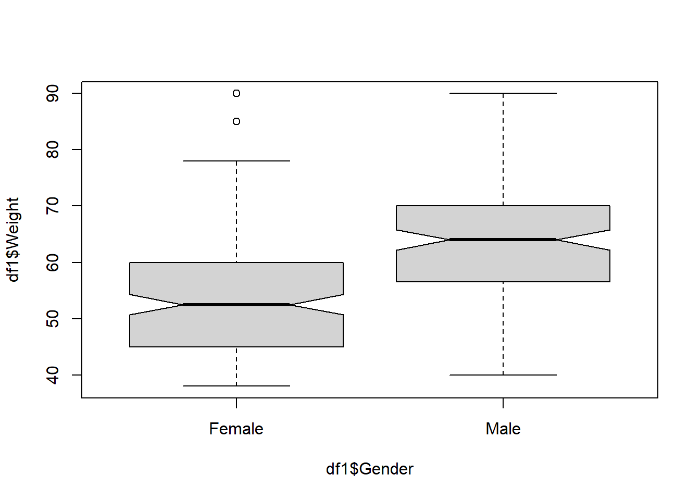
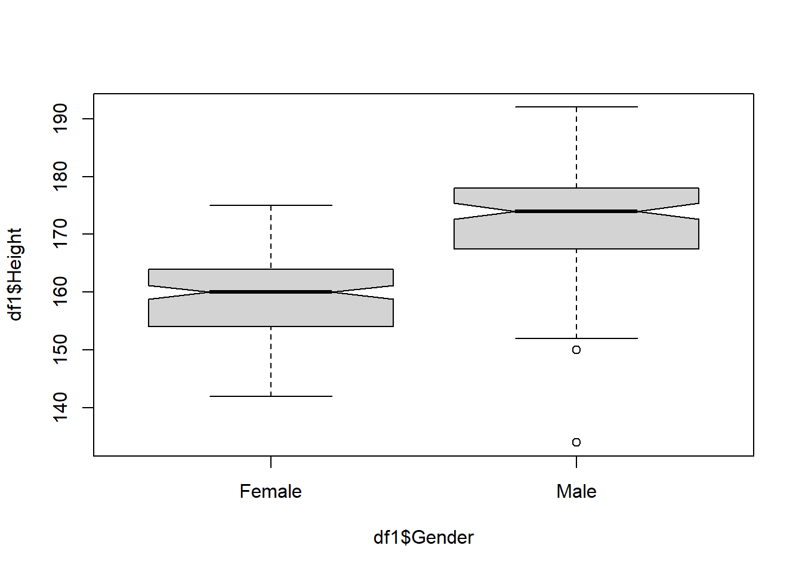
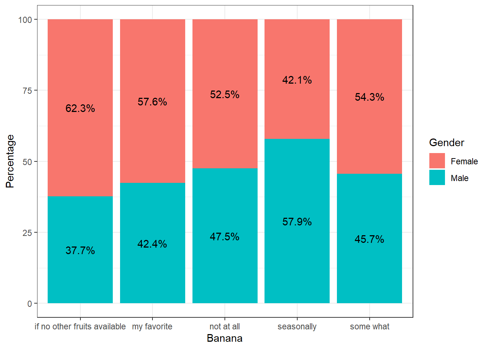
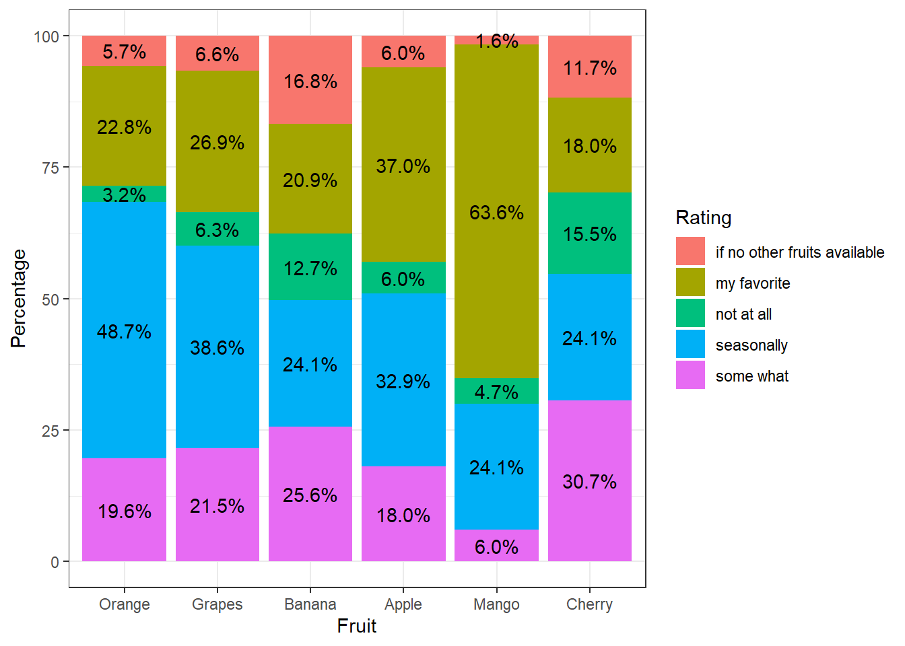
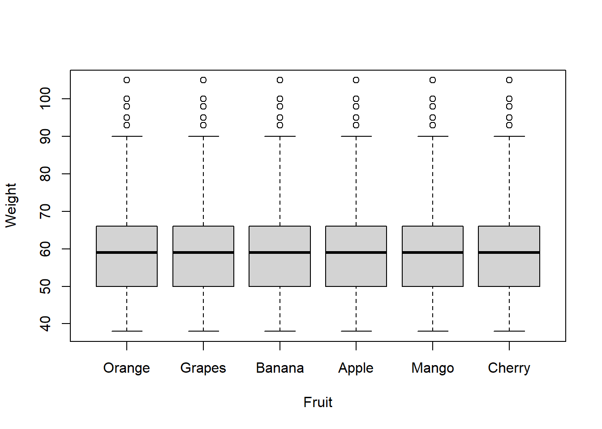

# loading the .csv file containing data
df=read.csv("https://raw.githubusercontent.com/sijuswamyresearch/R-for-Data-Analytics/refs/heads/main/data/survey_data.csv",header = TRUE)
df=df[,-1]
size=nrow(df)
#df8 Perception of Engineering Students on Fruit Preference
Abstract: This article is a short analysis of the data collected from the course participants of the
Fundamentals of Data Analytics using R Programming. A baseline descriptive analysis is conducted and the results are tested using hypothesis testing for generalizations.
Key words: Baseline analysis, categorical data, Likert scaled items, correlation testing, regression models, box plot, bar plot, percentage analysis, \(\chi^2\)-test, ANOVA.
8.1 Introduction
This article is prepared during the hands-on sessions of the first phase of the Faculty Development Programme- Data Analytics Using R. A questionnaire is prepared and administered through Google form. Total number of samples collected in the study is 253.
8.2 Data cleaning and Wrangling
As the first stage of the data pre-processing, the row data is cleaned and wrangled to make it ready for statistical analysis. Main processes involved are:
Removing unnecessary columns
Rename the attributes for make then clear and precise
Mapping of data types for statistical analysis
Re-frame the structure of the data if required
8.2.1 Rename the attribute names
Since the column titles obtained through the Google forms are the questions given in the questionnaire, it will be not suitable to represent an attribute. There are two ways to correct it- manually correct in the downloaded excel file or rename the column names programatically.
In this article, the later approach is demonstrated.
colnames(df) <- c("Gender","Age","Weight","Height","Orange","Grapes","Banana","Apple","Mango","Cherry")8.3 Descriptive Analysis
A cleaned data is examined with basic statistical tools to understand the distribution of various attributes and its relationship between control variables. At this initial stage, fundamental tools like frequency tables, cross tabulations and percentage analysis followed by proper visualizations will be used. All the socio-demographic variables and control variables will be analysed statistically.
Gender
The gender-wise distribution of the responses is shown in the following Table.
Gtab=round(prop.table(table(df$Gender))*100,2)
Gtab
Female Male
54.55 45.45 The percentage analysis shows that majority of the respondents are from Female category.
A barplot showing this distribution is shown in the following Figure.
barplot(Gtab)Age
Completed age of the respondents are collected through the form. Interest of respondents may be varied over age range rather than individual ages. So the continuous variable age shall be converted to a categorical variable for reasonable use of this attribute. Respondents with age upto 20 is consider as ‘adolescent’, between 20 and 30 as ‘youth’ and above 30 is considered as the ‘elder’. A new variable Age_group is created as follows.
df$Age_group <- cut(df$Age,
breaks=c(-Inf, 20, 30, Inf),
labels=c("adolescent","youth","elder"))
#dfdf$Gender=as.factor(df$Gender)
barplot(table(df$Gender,df$Age_group),beside = TRUE,legend.text = levels(df$Gender))A contingency table of the gender-wise distribution over age-group is shown in the Table below:
knitr::kable(table(df$Age_group,df$Gender))| Female | Male | |
|---|---|---|
| adolescent | 59 | 85 |
| youth | 58 | 27 |
| elder | 21 | 3 |
8.3.1 Conversion of data into long format
The basic objective of this work is to compare the respondent preference of fruit based on their interest shown in the survey. So responses regarding preference of various fruits under the study should br bring together before statistical investigations. To achieve this goal, the *wide formatted** data is transformed into the long format with a columns for fruits and the corresponding preference level.
library(reshape2)
library(plyr)
data_long <- melt(df,
# ID variables - all the variables to keep but not split apart on
id.vars=c("Gender","Age","Weight","Age_group","Height"),
# The source columns
measure.vars=c("Orange", "Grapes", "Banana","Apple","Mango","Cherry" ),
# Name of the destination column that will identify the original
# column that the measurement came from
variable.name="Fruit",
value.name="Rating"
)
data_long <- arrange(data_long,data_long$Fruit, data_long$Rating)# to get a sorted view
#data_longWeight
The distribution of respondent’s weights is shown in the Boxplot shown below:
boxplot(df$Weight,notch = F)The five point summary of the attribite ‘weight’ is shown in the Table below:
summary(df$Weight) Min. 1st Qu. Median Mean 3rd Qu. Max.
38.00 50.00 59.00 59.71 66.00 153.00 It is noted that the box plot shows the presence of outliers in the weights. These samples can be removed as follows:
outliers <- boxplot(df$Weight, plot=FALSE)$out
df1<-df;
df1<- df1[-which(df1$Weight %in% outliers),]
#dim(df1)A gender-wise comparison of weights is shown in the following figure. It is clear from the plot that, the majority of the female category is above the average body weight category!
boxplot(df1$Weight~df1$Gender,notch = T)
Height
The distribution of respondent’s height is shown in the Boxplot shown below:
boxplot(df$Height,notch = F)The five point summary of the attribute ‘Height’ is shown in the Table below:
summary(df$Height) Min. 1st Qu. Median Mean 3rd Qu. Max.
5.5 157.0 165.0 161.6 172.0 192.0 It is noted that the box plot shows the presence of outliers in the weights. These samples can be removed as follows:
outliers <- boxplot(df$Height, plot=FALSE)$out
df1<-df;
df1<- df1[-which(df1$Height %in% outliers),]
#dim(df1)A gender-wise comparison of heights is shown in the following figure. It is clear from the plot that, the majority of the female category is below the average height category!
boxplot(df1$Height~df1$Gender,notch = T)
8.4 Gender-wise preference of fruits
A percentage analysis of gender-wise preference of various fruits is given in theis section.
library(dplyr)
Attaching package: 'dplyr'The following objects are masked from 'package:plyr':
arrange, count, desc, failwith, id, mutate, rename, summarise,
summarizeThe following objects are masked from 'package:stats':
filter, lagThe following objects are masked from 'package:base':
intersect, setdiff, setequal, unionlibrary(ggplot2)
# Ensure 'Grapes' is treated as a factor
df$Grapes <- as.factor(df$Grapes)
df$Gender <- as.factor(df$Gender)
# Check if the column 'Grapes' exists
if ("Grapes" %in% colnames(df)) {
df %>%
dplyr::count(Grapes, Gender) %>%
group_by(Grapes) %>%
mutate(pct = prop.table(n) * 100) %>%
ggplot(aes(Grapes, pct, fill = Gender)) +
geom_bar(stat = "identity") +
ylab("Number of respondents") +
geom_text(aes(label = paste0(sprintf("%1.1f", pct), "%")),
position = position_stack(vjust = 0.5)) +
labs(x = "Grapes", y = "Percentage", fill = "Gender") +
theme_bw()
} else {
print("Column 'Grapes' not found in the data frame.")
}#gender-wise
library(dplyr)
library(ggplot2)
df %>%
dplyr::count(Mango,Gender) %>%
group_by(Mango) %>%
mutate(pct= prop.table(n) * 100) %>%
ggplot() + aes(Mango, pct, fill=Gender) +
geom_bar(stat="identity") +
ylab("Number of respondents") +
geom_text(aes(label=paste0(sprintf("%1.1f", pct),"%")),
position=position_stack(vjust=0.5)) +labs(x ="Mango", y = "Percentage",fill="Gender")+
theme_bw()#gender-wise
library(dplyr)
library(ggplot2)
df %>%
dplyr::count(Banana,Gender) %>%
group_by(Banana) %>%
mutate(pct= prop.table(n) * 100) %>%
ggplot() + aes(Banana, pct, fill=Gender) +
geom_bar(stat="identity") +
ylab("Number of respondents") +
geom_text(aes(label=paste0(sprintf("%1.1f", pct),"%")),
position=position_stack(vjust=0.5)) +labs(x ="Banana", y = "Percentage",fill="Gender")+
theme_bw()
8.5 Overall preference over fruits
A percentage analysis of overall preference over various fruits is shown in the following figure.
#gender-wise
library(dplyr)
library(ggplot2)
data_long%>%
dplyr::count(Fruit,Rating) %>%
group_by(Fruit) %>%
mutate(pct= prop.table(n) * 100) %>%
ggplot() + aes(Fruit, pct, fill=Rating) +
geom_bar(stat="identity") +
ylab("Number of respondents") +
geom_text(aes(label=paste0(sprintf("%1.1f", pct),"%")),
position=position_stack(vjust=0.5)) +labs(x ="Fruit", y = "Percentage",fill="Rating")+
theme_bw()
8.6 Finding descriptive statistics of continuous variables
Weight over Gender
library(dplyr)
Fa=group_by(df, Gender) %>%
dplyr::summarise(
count = n(),
mean =round( mean(Weight, na.rm = TRUE),2),
sd = round(sd(Weight, na.rm = TRUE),2)
)
knitr::kable(Fa)| Gender | count | mean | sd |
|---|---|---|---|
| Female | 138 | 54.63 | 13.01 |
| Male | 115 | 65.82 | 11.98 |
Height over Gender
library(dplyr)
Fa=group_by(df, Gender) %>%
dplyr::summarise(
count = n(),
mean =round( mean(Height, na.rm = TRUE),2),
sd = round(sd(Height, na.rm = TRUE),2)
)
knitr::kable(Fa)| Gender | count | mean | sd |
|---|---|---|---|
| Female | 138 | 158.53 | 11.49 |
| Male | 115 | 165.39 | 31.63 |
Height over Age Group
library(dplyr)
Fa=group_by(df, Age_group) %>%
dplyr::summarise(
count = n(),
mean =round( mean(Height, na.rm = TRUE),2),
sd = round(sd(Height, na.rm = TRUE),2)
)
knitr::kable(Fa)| Age_group | count | mean | sd |
|---|---|---|---|
| adolescent | 144 | 162.18 | 24.83 |
| youth | 85 | 160.86 | 23.17 |
| elder | 24 | 161.21 | 8.73 |
library(dplyr)
Fa=group_by(df, Gender) %>%
dplyr::summarise(
count = n(),
mean =round( mean(Age, na.rm = TRUE),2),
sd = round(sd(Age, na.rm = TRUE),2)
)
knitr::kable(Fa)| Gender | count | mean | sd |
|---|---|---|---|
| Female | 138 | 23.27 | 6.27 |
| Male | 115 | 20.34 | 2.35 |
8.6.1 Rename the levels ( For Numerical calculation)
df$Orange <- factor(df$Orange,
levels = c("not at all","if no other fruits available","some what","seasonally","my favorite"),
labels = c("1","2","3","4","5"))
#head(df)mean(as.integer(df$Orange))[1] 3.9090918.7 Inferential Analysis
The inferential analysis is the generalization part of statistics. This phase focuses on possibilities of generalization of observations in the descriptive analysis. This is achieved through the hypothesis testing aspects of inferential statistics.
8.7.1 Testing of significance of difference in mean weight over gender
Significance of difference in mean of continuous variable over two categories can be tested using the t-test. The null hypothesis of the t-test is;
\(H_0:\) there is no significance difference in the mean
The alternative hypothesis is:
\(H_1:\) there is significance difference in the mean
If the p-value of the test result is less than 0.05, the null hypothesis is rejected at \(5\%\) level of significance. Otherwise the null hypothesis can’t be rejected.
As an example, let us investigate whether there is significant difference in the mean weight over gender.
t.test(Weight~Gender,alternative="less",data=df)
Welch Two Sample t-test
data: Weight by Gender
t = -7.1112, df = 248.45, p-value = 6.102e-12
alternative hypothesis: true difference in means between group Female and group Male is less than 0
95 percent confidence interval:
-Inf -8.588345
sample estimates:
mean in group Female mean in group Male
54.63043 65.81565 #plot(df$Weight~df$Gender)Since the p-value is less than 0.05, the null hypothesis is rejected. So it is statistically reasonable to conclude that the mean weight of female respondents is less than male respondents.
8.7.2 Significance of difference in mean weight over Fruit interest
# Compute the analysis of variance
res.aov <- aov(Weight ~ Fruit, data = data_long)
# Summary of the analysis
summary(res.aov) Df Sum Sq Mean Sq F value Pr(>F)
Fruit 5 0 0 0 1
Residuals 1512 284316 188 plot(Weight~Fruit,data=data_long)
8.8 Testing of significance difference in rating over Fruit category
As a first step a percentage analysis is conducted on the fruit preference data as shown below:
8.8.1 Percentage analysis of the rating of fruit category
prop.table(table(data_long$Fruit, data_long$Rating))*100
if no other fruits available my favorite not at all seasonally
Orange 0.5928854 4.3478261 0.5270092 8.1027668
Grapes 0.9881423 4.8089592 1.0540184 6.5217391
Banana 2.8985507 3.7549407 1.6469038 3.8866930
Apple 0.8563900 6.0606061 0.9222661 5.5335968
Mango 0.2635046 10.2766798 0.8563900 4.0843215
Cherry 1.9762846 3.0961792 2.3056653 4.4137022
some what
Orange 3.0961792
Grapes 3.2938076
Banana 4.4795784
Apple 3.2938076
Mango 1.1857708
Cherry 4.87483538.8.2 \(\chi^2\) test for confirmation of difference in rating over fruit category
# chi square
chisq.test(table(data_long$Fruit,data_long$Rating))
Pearson's Chi-squared test
data: table(data_long$Fruit, data_long$Rating)
X-squared = 255.07, df = 20, p-value < 2.2e-16Since the p-value is less than 0.05, the null hypothesis that there is no significant difference in rating over fruit category is rejected. So it is statistically reasonable to conclude that the respondent’s preference over fruits is statistically significant.
8.8.3 Fruit preference over Age group
Significance of difference in fruit rating over age group is tested using the chi-squared test.
# chi square
chisq.test(table(data_long$Fruit,data_long$Age_group))
Pearson's Chi-squared test
data: table(data_long$Fruit, data_long$Age_group)
X-squared = 0, df = 10, p-value = 1Since the p-value is greater than 0.05, the null hypothesis that there is no significant difference in the fruit rating over age group.
8.9 Conclusion
Based on the statistical analysis the following findings are elicited.
There is significant difference in the mean weight of the respondents
There is significant difference in the mean weight over fruit preference.
There is significant difference in the fruit ratings over fruit type.
There is no significant difference in the fruit preference over age group.